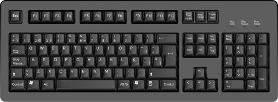

|  | El estructura externa de un teclado está hecha principalmente de plástico. Dicho teclado alberga las cubiertas de las teclas, los chips y los circuitos internos. Normalmente, hay de 103 a 105 cubiertas de teclas incrustadas sobre la estructura externa. En la esquina superior derecha de muchos teclados hay tres diodos emisores de luz (LED) que cuando se encienden muestran la activación de las teclas de mandos: Num Lock, Scroll Lock y Caps Lock. La primera es para bloquear los números, la segunda controla el desplazamiento horizontal y la tercera bloquea el texto de salida para que sea sólo en mayúsculas. |